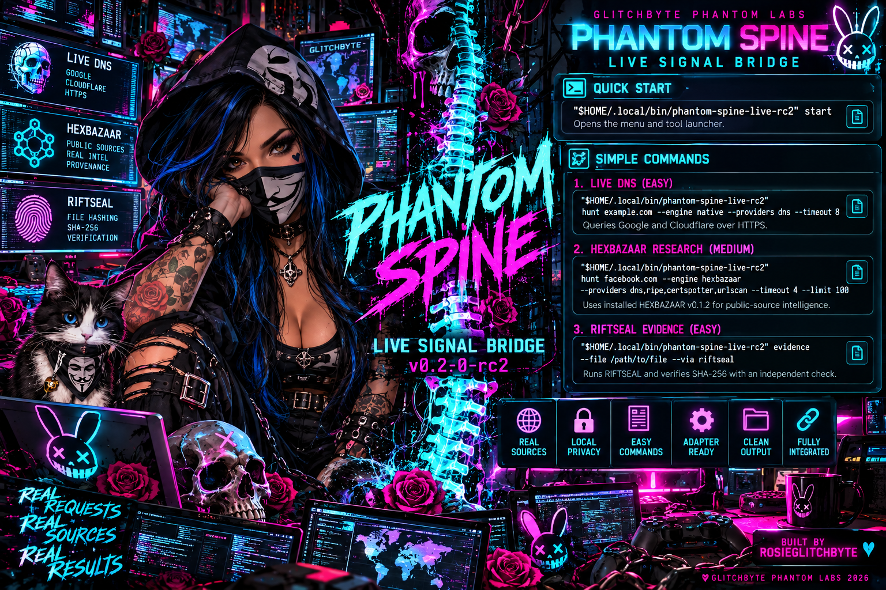

GLITCHBYTE PHANTOM LABS / PHANTOM SPINE
LIVE SIGNAL BRIDGE v0.2.0 · Real requests. Real sources. Real results.

OFFICIAL APPROVED ROSIE + SPINE ARTWORK · GLITCHBYTE PHANTOM LABS 2026
Real Debian field-test evidence
113HEXBAZAAR public observations4 usable sources · facebook.com · 2026-10-21
6Native public DNS records6 usable queries · example.com · 2026-10-21
PASSRIFTSEAL SHA-256 agreementTwo matching calculations · 8,826-byte file
These are dated owner-run Debian results, not generated demo records or guarantees of future responses. Two Cloudflare DNS queries returned HTTP 200 / DNS 0 but zero accepted observations.
Copy commands, then run them in your terminal
EASY · GENUINE LIVE DNS
1. Public DNS research
Query Google and Cloudflare HTTPS DNS for example.com. Actual answers and source URLs print as they arrive.
"$HOME/.local/bin/phantom-spine-live-v020" hunt example.com --engine native --providers dns --timeout 8
MEDIUM · REAL HEXBAZAAR
2. Real multi-provider research
Invoke the installed HEXBAZAAR v0.1.2-rc1 engine against public data for facebook.com.
"$HOME/.local/bin/phantom-spine-live-v020" hunt facebook.com --engine hexbazaar --providers dns,ripe,certspotter,urlscan --timeout 4 --limit 100
EVIDENCE · REAL LOCAL WORK
3. File integrity with RIFTSEAL
Compute real SHA-256 on a selected file and verify RIFTSEAL agrees. No internet or auto-saved report.
"$HOME/.local/bin/phantom-spine-live-v020" evidence --file "$HOME/PhantomLabsLaunchers/glitchbyte-phantom-labs-master-hub-v0_2_0/index.html" --via riftseal
ONE EASY START
Forgot your commands?
Open the desktop icon, or paste this command to see the tool menu again.
"$HOME/.local/bin/phantom-spine-live-v020" start
Installing v0.2.0 never replaces your original v0.1.0, RC2, HEXBAZAAR, RIFTSEAL or Master Hub installation.